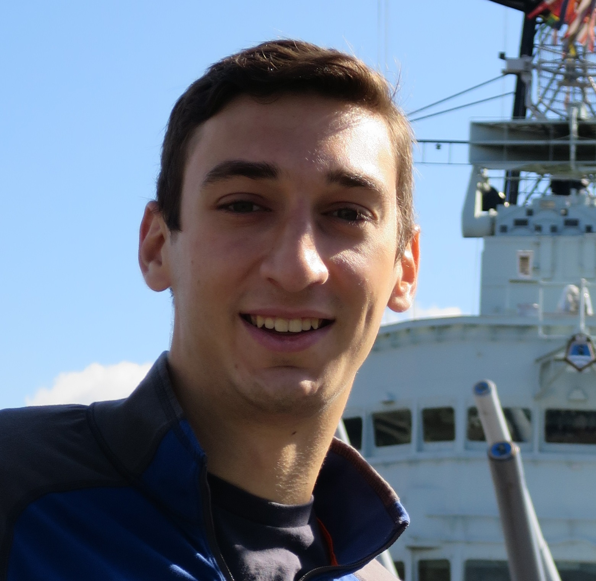

Willie Cohen

Hello! My name is Willie, welcome to my website!
Acknowledgments
- GitHub for providing me with an excellent and free platform to host my website
- Casey Waldren for helping me learn some of the intricacies of website routing
- paletton.com for providing an great tool for web design
Willie Cohen
I am currently a graduate student at the University of Rochester. I am working toward a Master of Science degree in Computer Science. As an incoming freshman at Rochester I was admitted to the GEAR (Graduate Engineering At Rochester) program, which is a combined degree admission program. I graduated this past May with a Bachelor of Science in Computer Science and a minor in Business, and I will graduate this coming May with my M.S. in Computer Science.
I am currently searching for a software development role, preferably in the NYC area.
Cache Simulator
May 2016
Cache simulator written in C for my Computer Organizations course. Varying block size, cache size, and associativity. Finished project had to simulate read and write operations while correctly classifying cache hits and misses by type.
Ray Tracing
November 2015
3D ray tracing project for my computer graphics course. Assignment to create a chessboard simulation to showcase different features of ray tracing such as shadows, Blinn-Phong shading, reflective and refracive materials, and more.
Source on GitHub
Othello AI
April 2015
Othello AI designed as an assignment for my Artificial Intelligence course. This was a team project which I collaborated with Casey Waldren and Johnny Jacobs on. The AI uses a modified version of the negamax and alpha-beta pruning algorithms to play against a human or compter opponent.
Source on GitHub